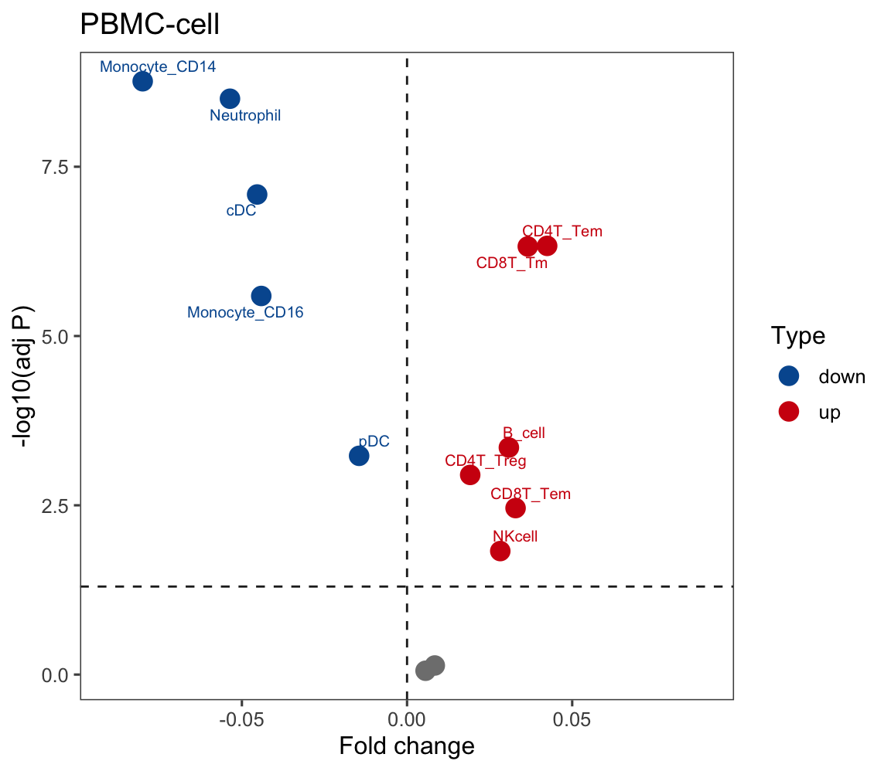
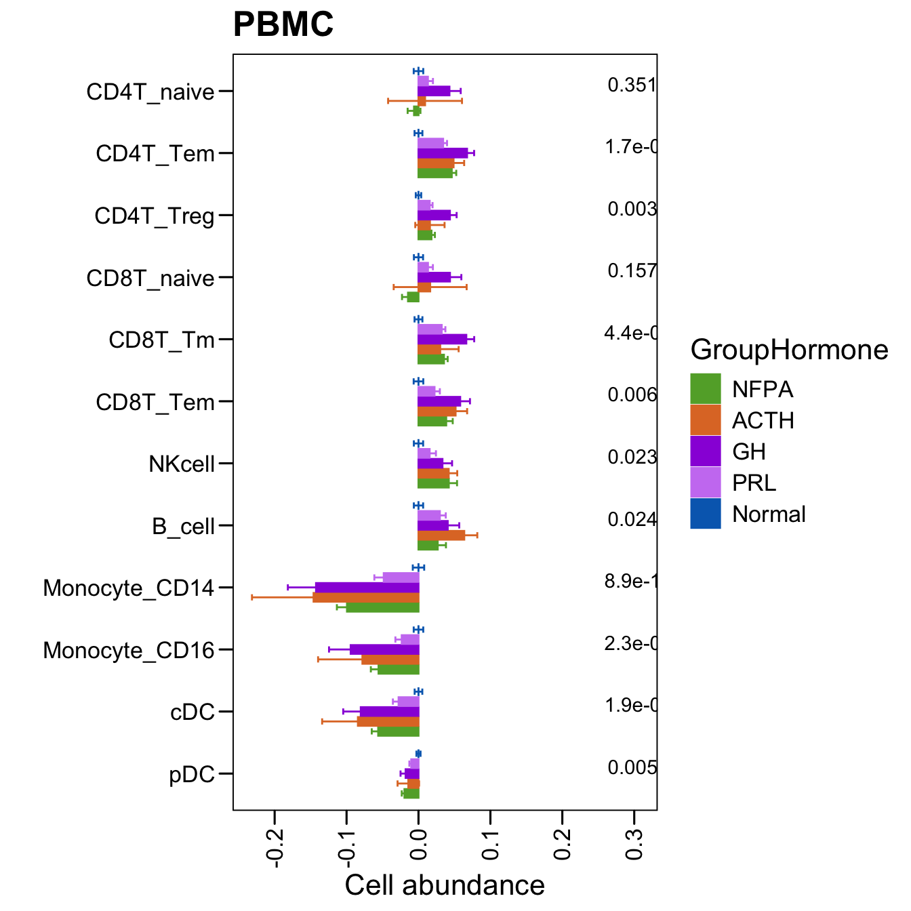
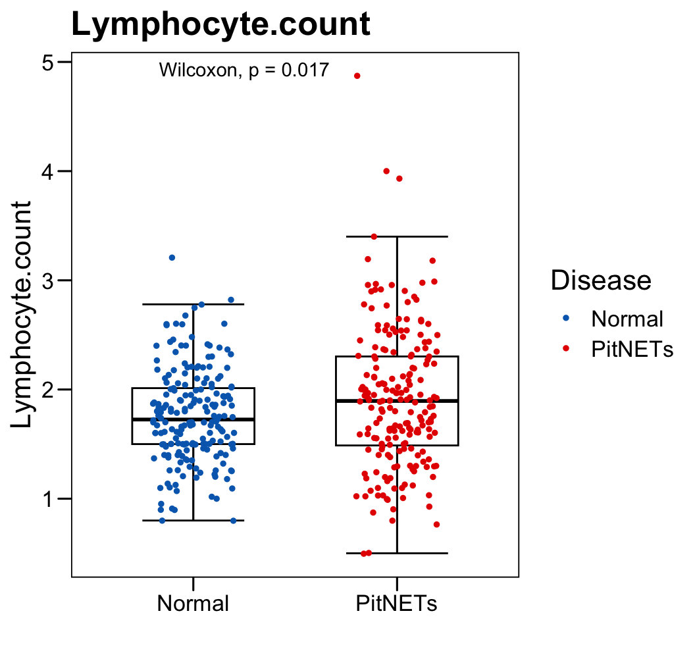
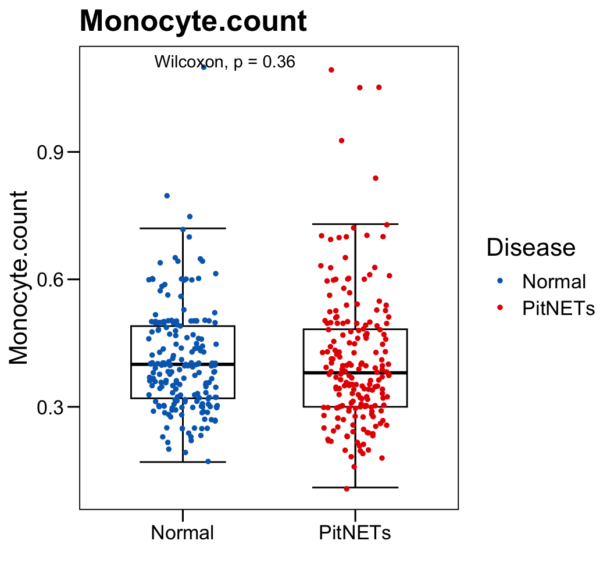
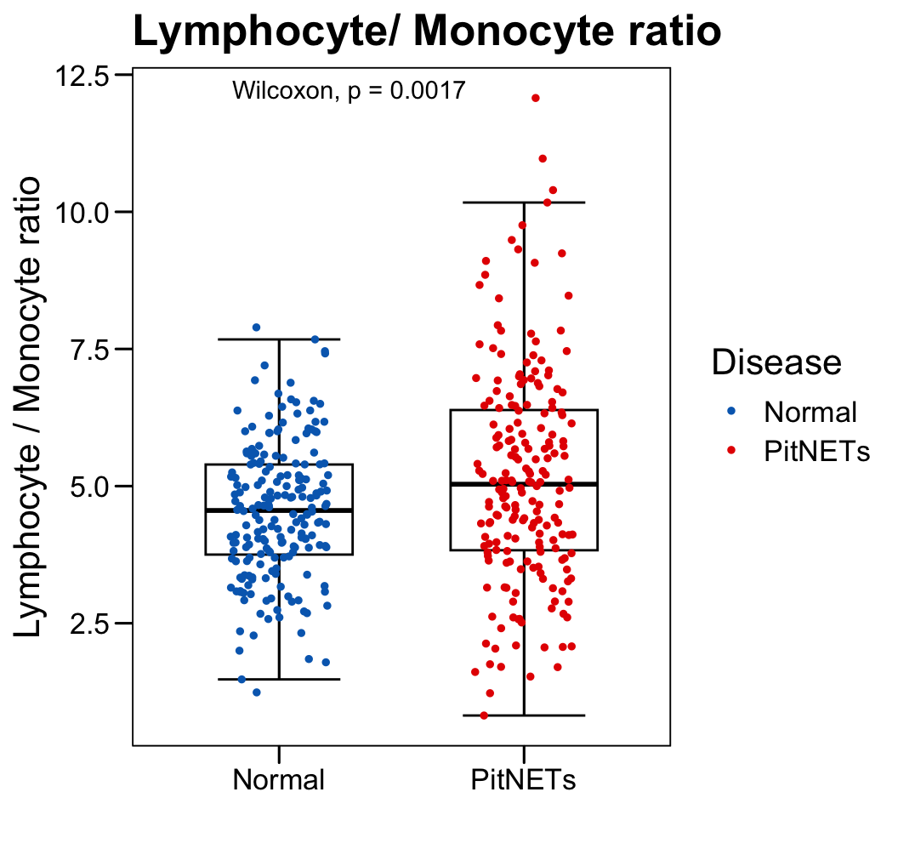
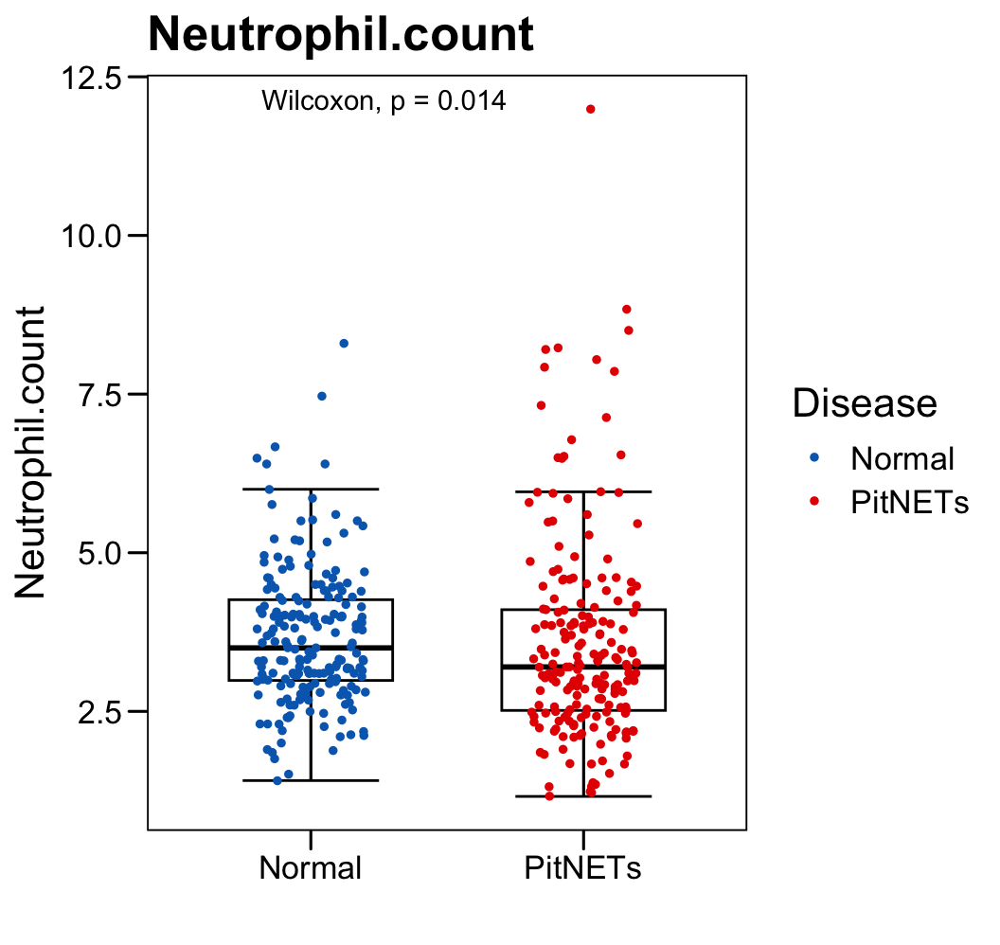
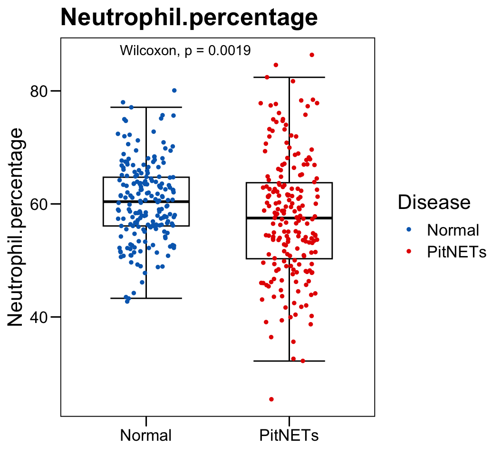

Chapter 3 PitNET PBMC
3.1 Preprocessing
The single-cell RNA-seq (scRNA-seq) data were preprocessed using Seurat (https://satijalab.org/seurat/).
# Set out path
out.path = ""
################################################################################################################
# Analysis and add meta data
hypo <- CreateSeuratObject(counts = exp.data, project = "PitNETs", min.cells = 0, min.features = 0)
hypo[["percent.mt"]] <- PercentageFeatureSet(hypo, pattern = "^MT-")
hypo
summary(hypo@meta.data$percent.mt)
############ analysis
pdf(paste0(out.path, "/2.filter.vlnplot.pdf"), width = 12, height = 7)
VlnPlot(hypo, features = c("nFeature_RNA", "nCount_RNA", "percent.mt"), pt.size = 0, group.by = "Sample", ncol = 3)
dev.off()
pdf(paste0(out.path, "/2.filter.geneplot.pdf"), width = 12, height = 7)
plot1 <- FeatureScatter(hypo, feature1 = "nCount_RNA", feature2 = "percent.mt")
plot2 <- FeatureScatter(hypo, feature1 = "nCount_RNA", feature2 = "nFeature_RNA")
plot1 + plot2
dev.off()
hypo <- NormalizeData(hypo, normalization.method = "LogNormalize", scale.factor = ncol(hypo) )
hypo <- FindVariableFeatures(hypo, selection.method = "vst", nfeatures = 2000)
# Identify the 10 most highly variable genes
top10 <- head(VariableFeatures(hypo), 10)
length(VariableFeatures(hypo))
# plot variable features with and without labels
pdf(paste0(out.path, "/3.VariableFeaturePlot.pdf"), width = 12, height = 7)
plot1 <- VariableFeaturePlot(hypo)
plot2 <- LabelPoints(plot = plot1, points = top10, repel = TRUE)
plot1 + plot2
dev.off()
all.genes <- rownames(hypo)
hypo <- ScaleData(hypo, features = VariableFeatures(hypo))
hypo <- RunPCA(hypo, features = VariableFeatures(object = hypo))
p <- DimPlot(hypo, reduction = "pca", group.by = "Sample", cols = color.lib) + theme_few()
ggsave(paste0(out.path, "/4.PCA.pdf"), p, width =11, height = 7)
##################### Harmony for bhypoc
length(VariableFeatures(hypo))
hypo <- RunHarmony(hypo, "Sample", max_iter = 3, sigma = 0.1)
hypo <- FindNeighbors(hypo, reduction = "harmony", dims = 1:20)
hypo <- FindClusters(hypo, resolution = 0.8)
hypo <- RunUMAP(hypo, reduction = "harmony", dims = 1:20)
set.seed(1)
kmeans.cluster <- stats::kmeans(hypo@reductions$harmony@cell.embeddings[, 1:20], centers = 100, iter.max = 100)
suhypoary(as.numeric(table(kmeans.cluster$cluster)))
hypo$Kmeans <- kmeans.cluster$cluster
pt.size = 1
set.raster = TRUE
p <- DimPlot(hypo, reduction = "umap", pt.size = pt.size, raster = set.raster,
group.by = "Sample", cols = color.lib) + theme_few()
ggsave(paste0(out.path, "/5.UMAP.sample.pdf"), p, width = 11, height = 7)
p <- DimPlot(hypo, reduction = "umap", pt.size = pt.size, raster = set.raster, label = T, label.size = 5,
group.by = "seurat_clusters", cols = color.lib) + theme_few()
ggsave(paste0(out.path, "/5.UMAP.cluster.pdf"), p, width = 9, height = 7)
p <- DimPlot(hypo, reduction = "umap", pt.size = pt.size, raster = set.raster, label = T, label.size = 3,
group.by = "Kmeans") + theme_few()
ggsave(paste0(out.path, "/5.UMAP.kmeans.pdf"), p, width = 9, height = 7)
p <- DimPlot(hypo, reduction = "umap", pt.size = pt.size, raster = set.raster,
group.by = "seurat_clusters", split.by = "Sample", cols = color.lib, ncol = 7) + theme_few()
ggsave(paste0(out.path, "/5.UMAP.cluster.s.pdf"), p, width = 30, height = 13)
p <- DimPlot(hypo, reduction = "umap", pt.size = pt.size, raster = set.raster,
group.by = "Sample", cols = color.lib) + theme_few()
ggsave(paste0(out.path, "/5.UMAP.sample.pdf"), p, width = 11, height = 7)
p <- DimPlot(hypo, reduction = "umap", pt.size = pt.size, raster = set.raster, label = T, label.size = 5,
group.by = "Tissue", cols = color.lib) + theme_few()
ggsave(paste0(out.path, "/5.UMAP.Tissue.pdf"), p, width = 9, height = 7)
p <- FeaturePlot(object = hypo, features = c("AVP","CD34","CD38","SDC1","CD19","CD79A","TNFRSF11A","CD4","CD8A"),
cols = c("#CCCCCC", "red"), pt.size = 0.5, raster = TRUE, ncol = 3,
reduction = "umap")
ggsave(paste0(out.path, "/5.cell.marker_Lin.pdf"), p, width = 14, height = 12)
p <- FeaturePlot(object = hypo, features = c("CD14","FCGR3A","CD1C","IL3RA","IRF4","C1QA","FCGR3B","S100A8","S100A9"),
cols = c("#CCCCCC", "red"), pt.size = 0.5, raster = TRUE, ncol = 3,
reduction = "umap")
ggsave(paste0(out.path, "/5.cell.marker_Mye.pdf"), p, width = 14, height = 12)
p <- FeaturePlot(object = hypo, features = c("CD4","CD8A","CCR7","FOXP3","IL7R","CD40LG","FGFBP2","NCAM1","XCL1"),
cols = c("#CCCCCC", "red"), pt.size = 0.5, raster = TRUE, ncol = 3,
reduction = "umap")
ggsave(paste0(out.path, "/5.cell.marker_NKT.pdf"), p, width = 14, height = 12)
p <- FeaturePlot(object = hypo, features = c("POU1F1","TBX19","NR5A1","PRL","PRLR","GATA3","GATA2","GZMH","GZMK"),
cols = c("#CCCCCC", "red"), pt.size = 0.5, raster = TRUE, ncol = 3,
reduction = "umap")
ggsave(paste0(out.path, "/5.cell.marker_Pit.pdf"), p, width = 14, height = 12)
out.meta <- as.data.frame(table(hypo$Sample))
write.xlsx(out.meta, paste0(out.path, "/1.CellCount.xlsx"), overwrite = T)
saveRDS(hypo, "obj/PitNETs.rds")3.2 Immune signatures
marker.scell.anno <- read.xlsx("Top.markers.CellTypeAnno.xlsx")
plot.cell <- unique(marker.scell.anno$cluster)
plot.cell <- plot.cell[! plot.cell %in% c("Undefine") ]
marker.scell.anno.list <- list()
for (i in 1:length(plot.cell)) {
sub <- marker.scell.anno[which(marker.scell.anno$cluster == plot.cell[i]), ]
sub <- sub[which(sub$p_val_adj < 0.0001), ]
sub <- sub[sub$gene %in% gene.scell.enroll$V6, ]
sub <- sub[order(sub$avg_log2FC, decreasing = T), ]
if (nrow(sub) > 200) sub <- head(sub, 200)
marker.scell.anno.list <- c(marker.scell.anno.list, list(sub = sub$gene))
}
names(marker.scell.anno.list) <- plot.cell
for (i in 1:length(marker.scell.anno.list)) message(i, " ", names(marker.scell.anno.list)[i], " ", length(marker.scell.anno.list[[i]]) )
ssgsea.mat <- gsva(as.matrix(exp.merge.all), marker.scell.anno.list, method='ssgsea', kcdf='Gaussian', abs.ranking=FALSE)plot.mat <- readRDS("data/021.ssgsea.rds")
meta.data.merge <- read.xlsx("data/022.meta.data.xlsx")
plot.data <- data.frame(Cell = rownames(plot.mat),
FC = 0, P.wilcox = NA)
for (i in 1:nrow(plot.mat)) {
sub.1 <- meta.data.merge$SampleID[which(meta.data.merge$LineageTissue == "Tumor_blood")]
sub.2 <- meta.data.merge$SampleID[which(meta.data.merge$LineageTissue == "Normal_blood")]
plot.data$FC[i] <- mean(plot.mat[i, sub.1]) - mean(plot.mat[i, sub.2])
plot.data$P.wilcox[i] <- wilcox.test(plot.mat[i, sub.1], plot.mat[i, sub.2])$p.value
}
plot.data$Padj <- p.adjust(plot.data$P.wilcox, method = "fdr")
plot.data$logFDR <- -log10(plot.data$Padj)
plot.data$Type <- "not-sig"
plot.data$Type[which(plot.data$FC > 0 & plot.data$Padj < 0.05)] <- "up"
plot.data$Type[which(plot.data$FC < -0 & plot.data$Padj < 0.05)] <- "down"
plot.data.sub <- plot.data[! plot.data$Cell %in% c("Undefine","platelet","Eosinophil","HSPC"), ]
plot.data.sub <- plot.data.sub[order(plot.data.sub$FC, decreasing = T) , ]
plot.data.sub$Label = plot.data.sub$Cell
plot.data.sub$Label[which(plot.data.sub$Type == "not-sig")] = ""
p <- ggscatter(plot.data.sub, x = "FC", y = "logFDR",
color = "Type", size = 4, repel = T,
palette = c(up = "#D01910", down = "#00599F", zz = "#CCCCCC"),
main = "PBMC-cell",
label = plot.data.sub$Label, font.label = 8,
xlab = "Fold change", ylab = "-log10(adj P)") +
theme_few()
p <- p + geom_hline(yintercept = 1.30, linetype="dashed", color = "#222222")
p <- p + scale_x_continuous(limits = c(-0.09, 0.09))
p <- p + geom_vline(xintercept = c(-0), linetype="dashed", color = "#222222")
p## Warning: No shared levels found between `names(values)` of the manual scale and the data's fill values.
##
## ACTH GH NFPA Normal PRL
## 4 10 41 175 53plot.info <- NULL
for (i in 1:nrow(plot.mat)) {
plot.data$Plot <- as.numeric(plot.mat[i, plot.data$SampleID])
plot.data$PlotDiff <- plot.data$Plot - mean(plot.data$Plot[which(plot.data$LineageTissue == "Normal_blood")])
plot.data$CellType <- rownames(plot.mat)[i]
plot.info <- rbind(plot.info, plot.data)
}
plot.info <- plot.info[! plot.info$CellType %in% c("Neutrophil","Eosinophil","HSPC","platelet"), ]
plot.info$GroupHormone <- factor(as.character(plot.info$GroupHormone), levels = rev(c("Normal","PRL","GH","ACTH","NFPA")))
p <- ggbarplot(plot.info,
x = "CellType", y = "PlotDiff",
color = "GroupHormone", fill = "GroupHormone",
palette = c("Normal" = "#006abc", color.hormone),
order = rev(c("CD4T_naive","CD4T_Tem","CD4T_Treg","CD8T_naive","CD8T_Tm","CD8T_Tem","NKcell","B_cell","Monocyte_CD14","Monocyte_CD16","cDC","pDC")),
main = "PBMC", width = 0.7, position = position_dodge(0.8),
add = c("mean_se"), add.params = list(width = 0.5),
xlab = "", ylab = paste0("Cell abundance"),
legend = "bottom")
p <- p + stat_compare_means(aes(group = GroupHormone, label = paste0(..p.format..)), method = "anova" )
p <- p + theme_base() + theme(plot.background = element_blank()) + coord_flip()
p <- p + theme(axis.text.x = element_text(angle = 90,hjust = 1,vjust = 0.5))
p
3.3 BRE
plot.data <- read.xlsx("data/TableS4.xlsx", startRow = 2)
colnames(plot.data) <- str_replace_all(colnames(plot.data), regex(".\\(.+"), "")
colnames(plot.data) <- str_replace_all(colnames(plot.data), regex("/"), "_")
p <- ggboxplot(plot.data,
x = "Disease", y = "Lymphocyte.count",
color = "black", fill = "white",
palette = c("#006abc","#e50000"),
order = c("Normal", "PitNETs"),
width = 0.6, bxp.errorbar = TRUE, bxp.errorbar.width = 0.5,
add = "jitter", add.param = list(color = "Disease", size = 1, width = 0.5),
xlab = "", ylab = paste0( "Lymphocyte.count" ),
main = paste0( "Lymphocyte.count" ),
legend = "bottom" )
p <- p + stat_compare_means(method = "wilcox.test")
p <- p + theme_base() + theme(plot.background = element_blank())
p
p <- ggboxplot(plot.data,
x = "Disease", y = "Monocyte.count",
color = "black", fill = "white",
palette = c("#006abc","#e50000"),
order = c("Normal", "PitNETs"),
width = 0.6, bxp.errorbar = TRUE, bxp.errorbar.width = 0.5,
add = "jitter", add.param = list(color = "Disease", size = 1, width = 0.5),
xlab = "", ylab = paste0( "Monocyte.count" ),
main = paste0( "Monocyte.count" ),
legend = "bottom" )
p <- p + stat_compare_means(method = "wilcox.test")
p <- p + theme_base() + theme(plot.background = element_blank())
p
p <- ggboxplot(plot.data,
x = "Disease", y = "Lymphocyte._.Monocyte.ratio",
color = "black", fill = "white",
palette = c("#006abc","#e50000"),
order = c("Normal", "PitNETs"),
width = 0.6, bxp.errorbar = TRUE, bxp.errorbar.width = 0.5,
add = "jitter", add.param = list(color = "Disease", size = 1, width = 0.5),
xlab = "", ylab = paste0( "Lymphocyte / Monocyte ratio" ),
main = paste0( "Lymphocyte/ Monocyte ratio" ),
legend = "bottom" )
p <- p + stat_compare_means(method = "wilcox.test")
p <- p + theme_base() + theme(plot.background = element_blank())
p
p <- ggboxplot(plot.data,
x = "Disease", y = "Neutrophil.count",
color = "black", fill = "white",
palette = c("#006abc","#e50000"),
order = c("Normal", "PitNETs"),
width = 0.6, bxp.errorbar = TRUE, bxp.errorbar.width = 0.5,
add = "jitter", add.param = list(color = "Disease", size = 1, width = 0.5),
xlab = "", ylab = paste0( "Neutrophil.count" ),
main = paste0( "Neutrophil.count" ),
legend = "bottom" )
p <- p + stat_compare_means(method = "wilcox.test")
p <- p + theme_base() + theme(plot.background = element_blank())
p
p <- ggboxplot(plot.data,
x = "Disease", y = "Neutrophil.percentage",
color = "black", fill = "white",
palette = c("#006abc","#e50000"),
order = c("Normal", "PitNETs"),
width = 0.6, bxp.errorbar = TRUE, bxp.errorbar.width = 0.5,
add = "jitter", add.param = list(color = "Disease", size = 1, width = 0.5),
xlab = "", ylab = paste0( "Neutrophil.percentage" ),
main = paste0( "Neutrophil.percentage" ),
legend = "bottom" )
p <- p + stat_compare_means(method = "wilcox.test")
p <- p + theme_base() + theme(plot.background = element_blank())
p